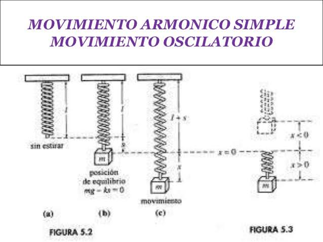
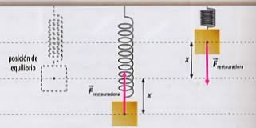

Definición
Un cuerpo describe un movimiento periódico cuando las variables de posición, x, velocidad v y aceleración a de su movimiento toman los mismos valores después de un intervalo de tiempo constante denominado período. Ej: Movimiento circular uniforme, el péndulo o un cuerpo unido a un muelle. En los dos últimos casos el movimiento de vaivén se produce sobre la misma trayectoria (arco o recta). Decimos que es un movimiento oscilatorio o vibratorio.
Movimiento oscilatorio o vibratorio es aquel en el que el cuerpo se desplaza sucesivamente a uno y otro lado de su posición de equilibrio repitiendo para cada intervalo de tiempo sus variables cinemáticas.
Oscilación es lo mismo que vibración. Sin embargo se suele hablar de vibración para designar oscilaciones rápidas o de alta frecuencia.
Cualquier cuerpo que sea apartado de su posición de equilibrio estable tenderá a recuperar el equilibrio efectuando movimientos oscilatorios alrededor de esa posición.
-------------------------------------------------------------------------------------------------------
Ej: Un cuerpo suspendido de un hilo permanecerá en equilibrio estable en la vertical. Si es apartado de la posición de equilibrio y se suelta oscilará alrededor de su posición de equilibrio. Se detendrá por la fricción del aire.
Supongamos un muelle que se aparta de su posición de equilibrio estable. Sobre él aparecen fuerzas restauradoras que tienden a devolverlo a su posición de equilibrio.

En este caso la F es la ley de Hooke.
Frestauradora = -k
k es una constante característica de cada muelle (N/m)
Una partícula tiene un movimiento oscilatorio armónico simple (MAS) cuando oscila bajo la acción de fuerzas restauradoras que son proporcionales a la distancia respecto de la posición de equilibrio y cuyo sentido es hacia la posición de equilibrio.
Cualquier cuerpo con movimiento oscilatorio armónico simple se le llama oscilador armónico.